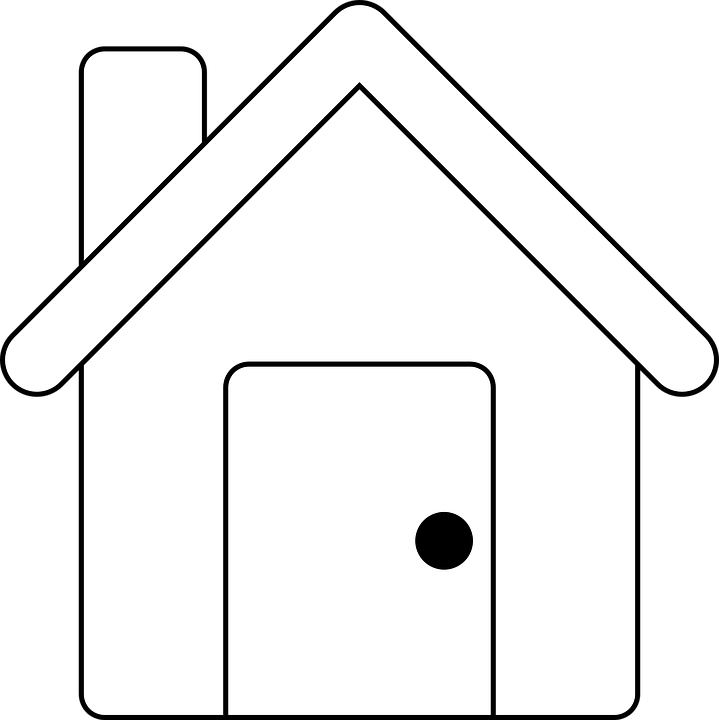
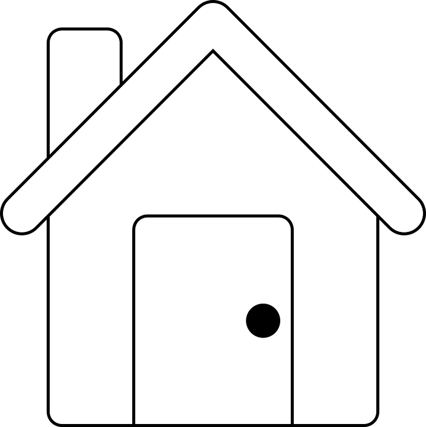

Tomador de café
21 anos
SOBRE MIM
Meu nome é Marcelo Reis, gosto de trabalhar no ramo da informática. Meu hobby é programar e jogar, claro, o café não pode faltar!
CONTATO
marcelo.albert.reis@hotmail.com
 

FORMAÇÃO
2016-2018: Ensino Médio completo Colégio E.E.B João XXIII, Brusque/SC.
2016-2017: Mecânico de usinagem (carga horária: 800h) Senai, Brusque/SC.
2015-2017: Técnico de informática (carga horária: 1200h) Instituto Federal Catarinense, Brusque/SC
2014-2015: Vendas administrativas (carga horária: 800h) Senac, Brusque/SC.
EXPERIÊNCIA PROFISSIONAL
HABILIDADES
Inglês: Básico
Comunicação: Médio
INTERESSES
Leitura
Programar
Jogar online